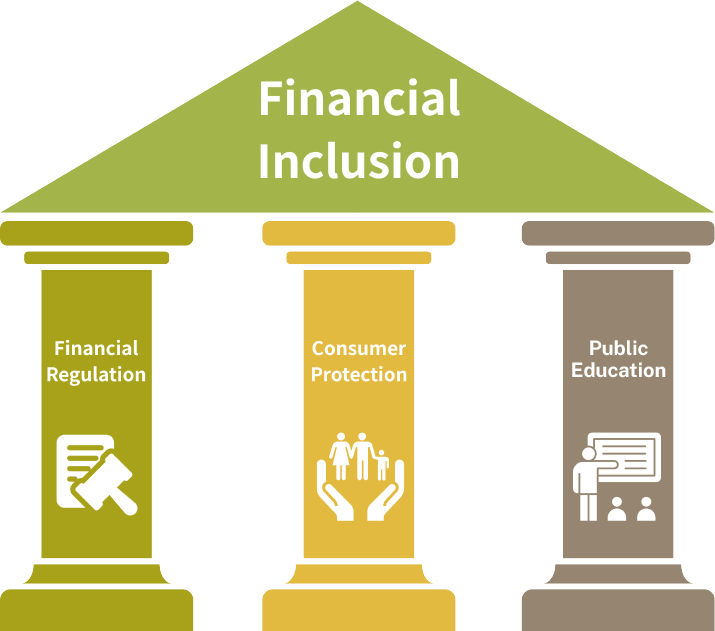
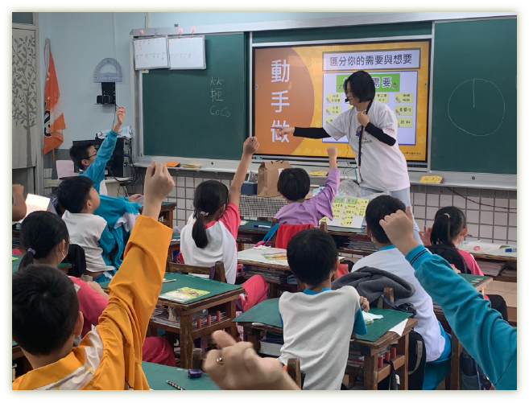
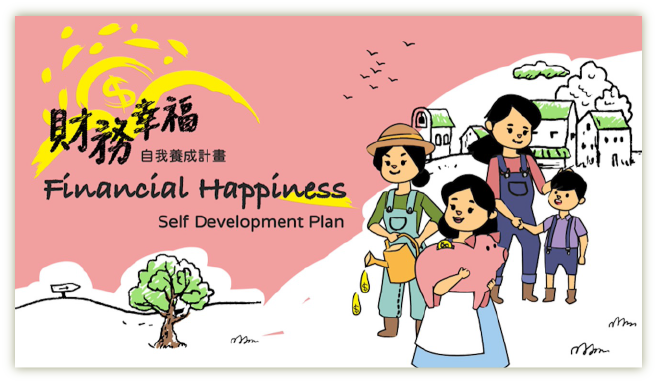
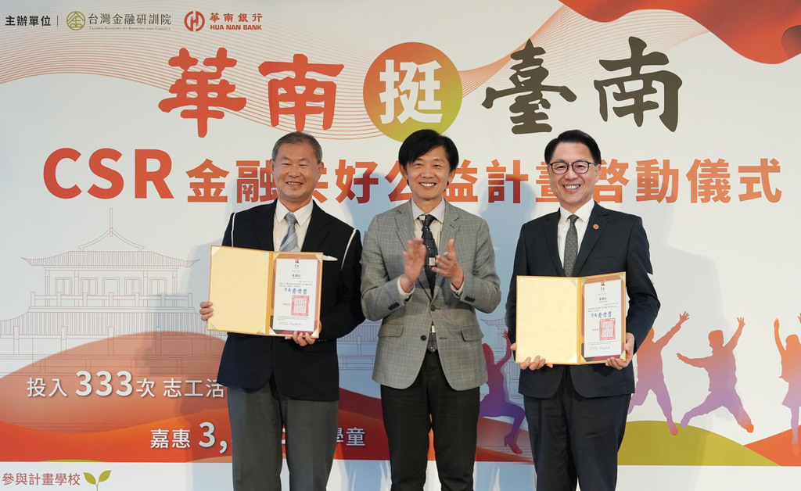
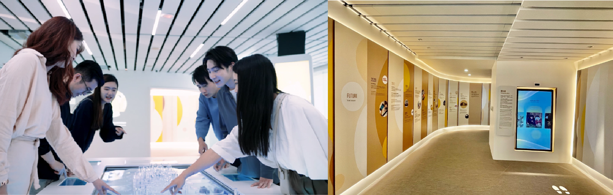

Financial Inclusion
Financial inclusion refers to the ability of individuals and businesses to access useful and affordable financial products and services in a responsible and sustainable manner to meet their needs, including transactions, payments, savings, loans, and insurance, as defined by the World Bank. The core vision is to enable all members of society to equally access financial products and services, thereby enhancing their financial well-being.
More Inclusive, Accessible and Sustainable Services
The global economy continues to thrive, but the accompanying issues of widening wealth gaps and unequal distribution of wealth are becoming increasingly severe. Currently, 20% of the population generates 80% of the wealth, and traditional financial institutions tend to favor the wealthy by providing them with more advantageous financial services, such as lower loan interest rates, higher deposit rates, easier access to loan services, or more convenient payment methods, among others.
In 2013, the United Nations Secretary-General’s Special Advocate for Inclusive Finance for Development (UNSGSA) highlighted that "financial inclusion serves as a driver or accelerator of economic growth, job creation, and social development." The UNSGSA advocates that "finance should serve everyone, not just the wealthy," which is also the greatest vision and goal of inclusive finance.
The Triad of Financial Inclusion

Financial regulation involves effectively overseeing financial institutions to ensure they do not offer products that are meaningless and unaffordable for consumers.
Consumer protection, led by organizations like the Consumer Protection Commission, complements financial regulation efforts, safeguarding consumers from harm.
Public Education is essential for individuals to benefit from regulatory and consumer protection mechanisms, emphasizing the need for enhanced financial literacy through education.
Financial education should not only promote financial knowledge, but also emphasize long-term skills development. The ability to change financial attitudes and develop correct financial management principles are important indicators of the effectiveness of financial education.
Therefore, TABF advocates for diverse teaching methods tailored to different audiences, utilizing modular and systematic knowledge structures, developing different teaching tools, producing videos on finance to expand dissemination of knowledge, and integrating behavior tracking in some courses.

Financial Happiness Self Development Plan
In 2020, TABF collaborated with the Jieh Huey Socail Welfare & Charity Foundation to develop a six-month program combining teaching and financial coaching to assist women in developing their financial management abilities. Over the course of six sessions, a total of 82 participants completed the program. As a result, the overall deposits increased by NT$10,917,888, overall debts decreased by NT$4,562,814, and overall wealth increased by NT$15,764,310.

CSR Financial Well-being Public Welfare Project
Since 2023, TABF has contributed to the successful model of financial literacy education by combining manpower and funding from financial institutions. This collaboration has accelerated the promotion of financial education, allowing financial literacy to take root in elementary school campuses. The project has seen participation from banks such as Hua Nan Bank and Chang Hwa Bank, benefiting schools in Tainan City, Changhua County, and other areas with rooted financial education.

Through this initiative, financial education can instill more trust in the financial environment and help banks understand the financial circumstances of families in society. It fosters social awareness among bank employees and encourages them to support economically disadvantaged individuals. This, in turn, facilitates the design of responsible and sustainable financial services.
Taiwan's Achievements in Financial Inclusion: A Success Heading to UN CSW68
The 68th session of the United Nations Commission on the Status of Women (CSW68), held in New York City, focused on the theme of "Women's Financial Issues and Economic Equality," sparking lively discussions. Seizing the opportunity of the gathering of delegates from various countries, TABF collaborated with domestic and international non-governmental organizations (NGOs) to organize two parallel meetings officially recognized by the United Nations. This allowed Taiwan to showcase its achievements in promoting inclusive finance on the diplomatic stage.
Taiwan's efforts and achievements in assisting rural women in establishing correct financial concepts and capabilities were well-received. Many delegates from different countries expressed their desire to obtain TABF's educational materials and guidance based on their experiences.
Financial Explorer 62 Click here to learn more.
The Financial Exploration Museum utilizes a circular corridor, a different format from traditional museums, to create a unique space for exploring financial knowledge. Through interactive multimedia displays, it showcases the trajectory and achievements of Taiwan’s financial development, helping visitors understand how finance has responded to changing social needs over time.
